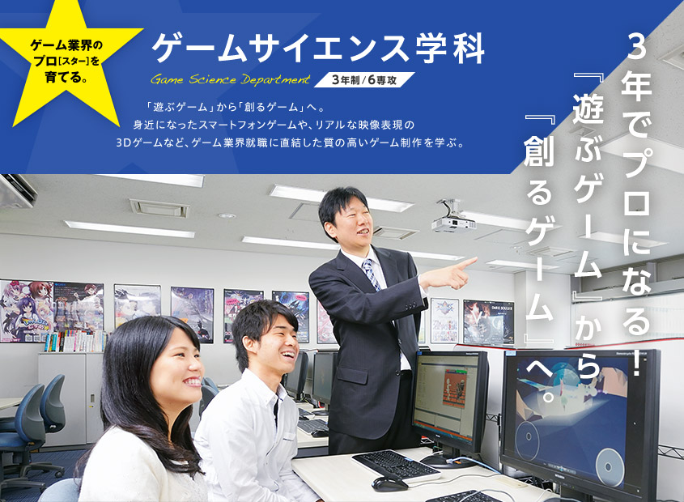
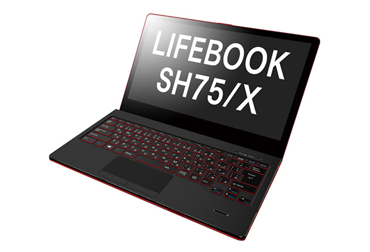

sample

ゲームサイエンス学科 学科の特徴
1.初心者でも大丈夫！3年間で大手ゲーム会社に就職できる充実した授業内容
2.海外にも通用する実践力を身につける
海外の学校との共同開発や英会話講座など、グローバルに活躍する人材を育成
3.現役クリエイターを招く特別授業『ゲーム業界研究』で現場の声を直接聴ける
4.一人１台以上の実習機を用意。さらに２１時まで実習設備を利用可能
5.高性能PC無料貸与
ゲームサイエンス学科入学者には３年間ノートＰＣが貸与され、 いつでもどこでもゲーム開発ができます。今人気のスマホゲームの開発も行っています。

無料貸与ノートPC スペック
・「富士通FMV」LIFEBOOK SH75/X
・ OS：Windows 10 Pro
・ CPU：Intel Core i5-6200U
・ メモリ：8GB
・ SSD：256GB
・ 重量：約1.2kg
専攻別科目
カリキュラムは業界の動向に合わせて変更する場合があります。
VRゲーム開発 スマートフォンゲーム開発 ネットワークプログラミング 3Dエフェクト 3Dプログラミング応用 3DCGアニメーション応用 Androidゲーム開発応用 ゲームアルゴリズム 3Dモデリング基礎 など
共通科目
カリキュラムは業界の動向に合わせて変更する場合があります。
プログラミング（C/C++) ゲームプログラミング ゲーム制作演習 3Dプログラミング Androidゲーム開発 ゲーム物理学 ゲーム企画 ゲームデザイン コンピュータグラフィックス 3DCGモデリング 3DCGアニメーション デザインパターン ゲームAIプログラミング プレゼンテーション演習 ビジネスマナー 企業研究 就職研究 英会話 業界研究 など
目指す職業
ゲームプログラマー
企画書や仕様書に合わせてプログラムを組み、ゲームをまとめあげる。
スマートフォンゲームプログラマー
スマートフォンデバイスゲームのプログラムを組み、ゲームをまとめる。
オンラインゲームネットワークエンジニア
オンラインゲームのネットワークインフラの構築を行う。
ゲームプランナー
ゲームの企画・設計を行い、システムなどを決める役割を担う。
スクリプター
ゲーム開発用言語を使用し、ゲームが実際に動作するように構築する。
専攻
VRゲーム開発専攻
最新技術を学び大人気のVRゲームを制作
人気急上昇中のVRゲーム。Virtual Reality（仮想現実） では仮想の3D空間でリアルなゲームを楽しむ事ができます。
VR独自の“直感的な操作”が可能となり、Oculus Riftなどの ヘッドマウントディスプレイを用いながらゲームデザインを行い、制作します。
スマートフォンゲーム開発専攻
数億人のスマートフォンユーザーを対象にしたゲームを制作
AndroidやiPhoneのようなスマートフォンでゲームを楽しむのは今や普通の光景です。 スマートフォンゲーム市場は世界的に拡大の一途をたどっています。身近なスマートフォンに関する技術を学び、 世界のゲーム市場を相手にゲームを制作します。
コンシューマゲーム開発専攻
家庭用ゲーム機向けの開発を実体験
個人では入手できない専用の開発機材を使い、家庭用ゲーム向けの開発を中心に技術を習得します。 ニンテンドー3DSやPlayStation®Vitaなど普段自宅で遊んでいるゲームを開発する楽しさ、難しさなどを体験します。 ハードウェア特有の入出力デバイス（Wiiリモコンなど）を使ったゲーム企画はコンシューマゲーム機ならではの醍醐味です。
オンラインゲーム開発専攻
ネットワークに強い技術者を育成
「オンライン」は、今やゲームでは外せないキーワード。見知らぬ相手と対戦できるのが醍醐味です。 その専門知識と技術やネットワーク環境の構築、サーバ管理・運営などの実践力を高めることで、 ゲームだけではなくＩＴ・通信業界などのエンジニアとしても活躍の場が広がります。
ゲームプログラミング専攻
飽くなき努力が求められる、ゲーム開発の主役
『プログラム』という言葉には、ゲーム開発における濃密な知識と技術、それに感性が込められています。 本専攻では、トライデント独自のカリキュラムでプログラミングのノウハウを体系的に学び、 学生一人ひとりがオリジナルゲームを企画・制作します。
3Dプログラミング専攻
ますます高度化する、現在の最重要技術
現在のゲームの主流は３Dゲームです。そこでは「現実さながらの」物理法則がプログラムされ、 「現実を遥かに超えた」演出が創造・実現されなければなりません。プログラミング能力に加え、 物理学・数学への理解が現在のゲームプログラマーに求められています。
目指す職業
ゲームプログラマー スマートフォンゲームプログラマー オンラインゲームネットワークエンジニア ゲームプランナー スクリプター
aaaaaaaaaaaaaaaaaaaaaaaaaaaaaaaaaaaa